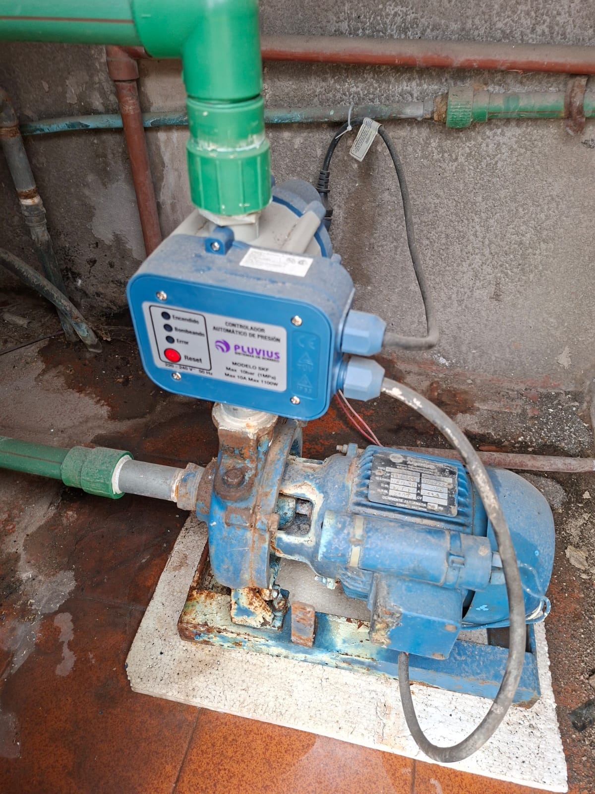

Soluciones rápidas, eficientes y confiables para todo tipo de problemas de plomería en tu hogar, comercio o consorcio en Mar del Plata.
Evaluamos el problema en tu domicilio en Mar del Plata utilizando herramientas y equipos adecuados.
Te informamos el costo detallado antes de realizar cualquier trabajo sin sorpresas posteriores.
Solucionamos la falla con materiales de alta durabilidad y repuestos garantizados.
Trabajamos con repuestos de primera calidad y mano de obra garantizada por escrito.
Consultanos por WhatsApp para coordinar una visita técnica inmediata.
Trabajo de plomería realizado en Mar del Plata:
